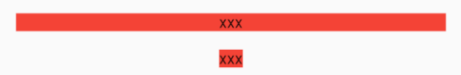

4.7 对齐与相对定位（Align）
在上一节中我们讲过通过Stack和Positioned，我们可以指定一个或多个子元素相对于父元素各个边的精确偏移，并且可以重叠。但如果我们只想简单的调整一个子元素在父元素中的位置的话，使用Align组件会更简单一些。
4.7.1 Align
Align 组件可以调整子组件的位置，定义如下：
Align({
Key key,
this.alignment = Alignment.center,
this.widthFactor,
this.heightFactor,
Widget child,
})
alignment: 需要一个AlignmentGeometry类型的值，表示子组件在父组件中的起始位置。AlignmentGeometry是一个抽象类，它有两个常用的子类：Alignment和FractionalOffset，我们将在下面的示例中详细介绍。widthFactor和heightFactor是用于确定Align组件本身宽高的属性；它们是两个缩放因子，会分别乘以子元素的宽、高，最终的结果就是Align组件的宽高。如果值为null，则组件的宽高将会占用尽可能多的空间。
1. 示例
我们先来看一个简单的例子：
Container(
height: 120.0,
width: 120.0,
color: Colors.blue.shade50,
child: Align(
alignment: Alignment.topRight,
child: FlutterLogo(
size: 60,
),
),
)
运行效果如图4-19所示：

FlutterLogo 是Flutter SDK 提供的一个组件，内容就是 Flutter 的 logo 。在上面的例子中，我们显式指定了Container的宽、高都为 120。如果我们不显式指定宽高，而通过同时指定widthFactor和heightFactor 为 2 也是可以达到同样的效果：
Align(
widthFactor: 2,
heightFactor: 2,
alignment: Alignment.topRight,
child: FlutterLogo(
size: 60,
),
),
因为FlutterLogo的宽高为 60，则Align的最终宽高都为2*60=120。
另外，我们通过Alignment.topRight将FlutterLogo定位在Container的右上角。那Alignment.topRight是什么呢？通过源码我们可以看到其定义如下：
//右上角
static const Alignment topRight = Alignment(1.0, -1.0);
可以看到它只是Alignment的一个实例，下面我们介绍一下Alignment。
2. Alignment
Alignment继承自AlignmentGeometry，表示矩形内的一个点，他有两个属性x、y，分别表示在水平和垂直方向的偏移，Alignment定义如下：
Alignment(this.x, this.y)
Alignment Widget会以矩形的中心点作为坐标原点，即Alignment(0.0, 0.0) 。x、y的值从-1到1分别代表矩形左边到右边的距离和顶部到底边的距离，因此2个水平（或垂直）单位则等于矩形的宽（或高），如Alignment(-1.0, -1.0) 代表矩形的左侧顶点，而Alignment(1.0, 1.0)代表右侧底部终点，而Alignment(1.0, -1.0) 则正是右侧顶点，即Alignment.topRight。为了使用方便，矩形的原点、四个顶点，以及四条边的终点在Alignment类中都已经定义为了静态常量。
Alignment可以通过其坐标转换公式将其坐标转为子元素的具体偏移坐标：
实际偏移 = (Alignment.x * (parentWidth - childWidth) / 2 + (parentWidth - childWidth) / 2,
Alignment.y * (parentHeight - childHeight) / 2 + (parentHeight - childHeight) / 2)
其中childWidth为子元素的宽度，childHeight为子元素高度。
现在我们再看看上面的示例，我们将Alignment(1.0, -1.0)带入上面公式，可得FlutterLogo的实际偏移坐标正是（60，0）。下面再看一个例子：
Align(
widthFactor: 2,
heightFactor: 2,
alignment: Alignment(2,0.0),
child: FlutterLogo(
size: 60,
),
)
我们可以先想象一下运行效果：将Alignment(2,0.0)带入上述坐标转换公式，可以得到FlutterLogo的实际偏移坐标为（90，30）。实际运行如图4-20所示：

3. FractionalOffset
FractionalOffset 继承自 Alignment ，它和 Alignment 唯一的区别就是坐标原点不同！FractionalOffset 的坐标原点为矩形的左侧顶点，这和布局系统的一致，所以理解起来会比较容易。FractionalOffset的坐标转换公式为：
实际偏移 = (FractionalOffse.x * (parentWidth - childWidth), FractionalOffse.y * (parentHeight - childHeight))
下面看一个例子：
Container(
height: 120.0,
width: 120.0,
color: Colors.blue[50],
child: Align(
alignment: FractionalOffset(0.2, 0.6),
child: FlutterLogo(
size: 60,
),
),
)
实际运行效果如图4-21所示下：

我们将FractionalOffset(0.2, 0.6)带入坐标转换公式得FlutterLogo实际偏移为（12，36），和实际运行效果吻合。
4.7.2 Align和Stack对比
可以看到，Align和Stack/Positioned都可以用于指定子元素相对于父元素的偏移，但它们还是有两个主要区别：
- 定位参考系统不同；
Stack/Positioned定位的参考系可以是父容器矩形的四个顶点；而Align则需要先通过alignment参数来确定坐标原点，不同的alignment会对应不同原点，最终的偏移是需要通过alignment的转换公式来计算出。 Stack可以有多个子元素，并且子元素可以堆叠，而Align只能有一个子元素，不存在堆叠。
4.7.3 Center组件
我们在前面章节的例子中已经使用过Center组件来居中子元素了，现在我们正式来介绍一下它。通过查找SDK源码，我们看到Center组件定义如下：
class Center extends Align {
const Center({ Key? key, double widthFactor, double heightFactor, Widget? child })
: super(key: key, widthFactor: widthFactor, heightFactor: heightFactor, child: child);
}
可以看到Center继承自Align，它比Align只少了一个alignment 参数；由于Align的构造函数中alignment 值为Alignment.center，所以，我们可以认为Center组件其实是对齐方式确定（Alignment.center）了的Align。
上面我们讲过当widthFactor或heightFactor为null时组件的宽高将会占用尽可能多的空间，这一点需要特别注意，我们通过一个示例说明：
...//省略无关代码
DecoratedBox(
decoration: BoxDecoration(color: Colors.red),
child: Center(
child: Text("xxx"),
),
),
DecoratedBox(
decoration: BoxDecoration(color: Colors.red),
child: Center(
widthFactor: 1,
heightFactor: 1,
child: Text("xxx"),
),
)
运行效果如图4-22所示：

4.7.4 总结
本节重点介绍了Align组件及两种偏移类Alignment 和FractionalOffset，读者需要理解这两种偏移类的区别及各自的坐标转化公式。另外，在此建议读者在需要制定一些精确的偏移时应优先使用FractionalOffset，因为它的坐标原点和布局系统相同，能更容易算出实际偏移。
在后面，我们又介绍了Align组件和Stack/Positioned、Center的关系，读者可以对比理解。
还有，熟悉Web开发的同学可能会发现Align组件的特性和Web开发中相对定位（position: relative）非常像，是的！在大多数时候，我们可以直接使用Align组件来实现Web中相对定位的效果，读者可以类比记忆。